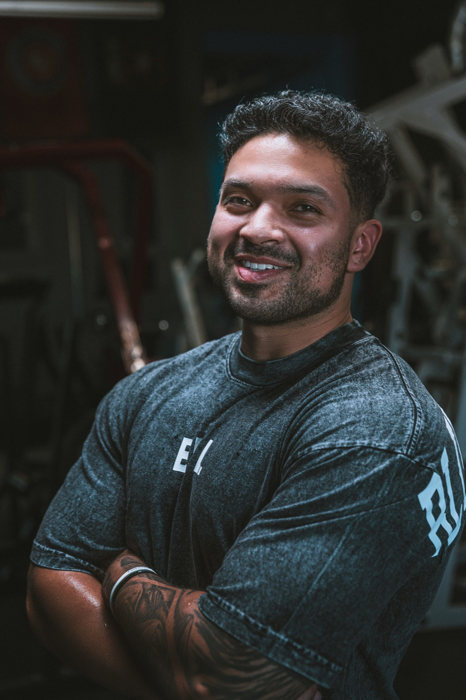
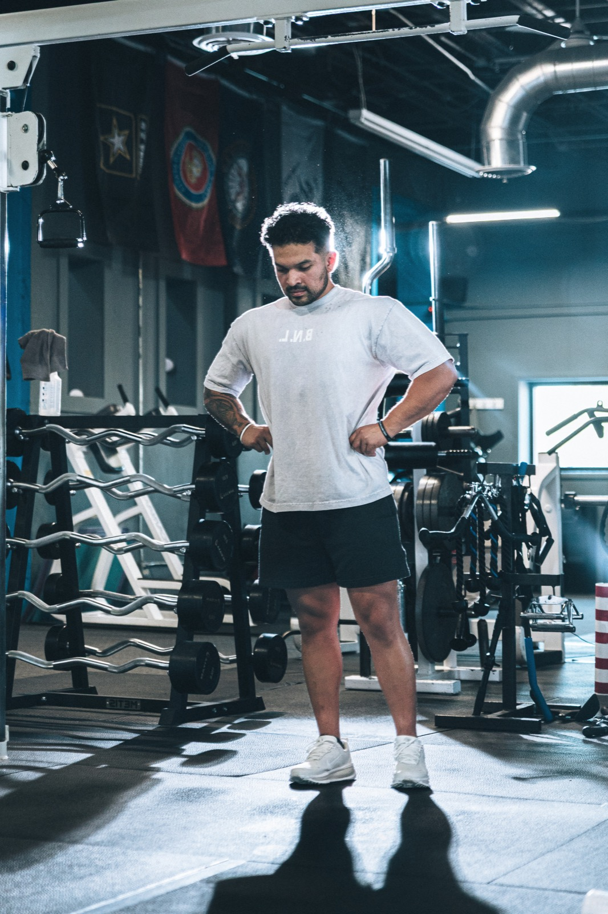
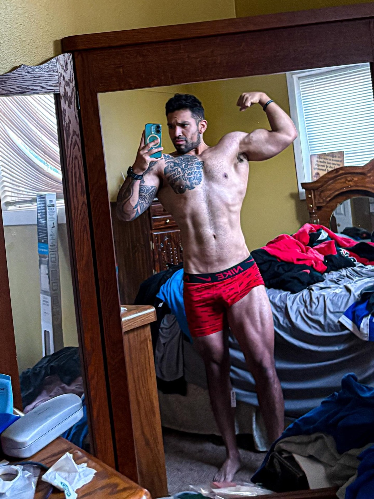

The Founder Story
I built Body Rebuild because I needed it first.
I knew what it felt like to want a change and still lack a structure I trusted. So I committed to sixteen weeks of consistent training, realistic nutrition, and measurable progression.

The Starting Point
June 24, 2025
I started at 210 pounds. I wanted to lose fat, rebuild strength, stop feeling limited by back pain, and prove that I could follow a structured process all the way through.


The Process
The process was not complicated. It was consistent.
I trained on a structured schedule. I progressed the major lifts. I made nutrition decisions I could repeat. I tracked the work instead of relying on motivation. When life changed, I adjusted the plan instead of abandoning it.
The Result
Sixteen weeks later
I weighed 180 pounds. My back pain was no longer present. I bench pressed 315 pounds for the first time. My abs were visible. I had built new habits, felt more confident, and felt more secure in the person I was becoming.


The biggest result was not the number on the scale.
The biggest result was having a process I could trust. Body Rebuild was created to give busy adults that same kind of structure: clear training, realistic nutrition, measured progress, and the level of support they actually need.
Elijah Robles
Founder and Coach, BNL Plus
Elijah created Body Rebuild to help busy adults 35+ rebuild strength, lose fat, and return to consistent training without extreme workouts, rigid meal plans, or fake urgency.
Elijah’s transformation is founder proof. It does not guarantee that another person will lose 30 pounds, eliminate pain, bench press 315 pounds, or achieve the same appearance. Individual results vary.